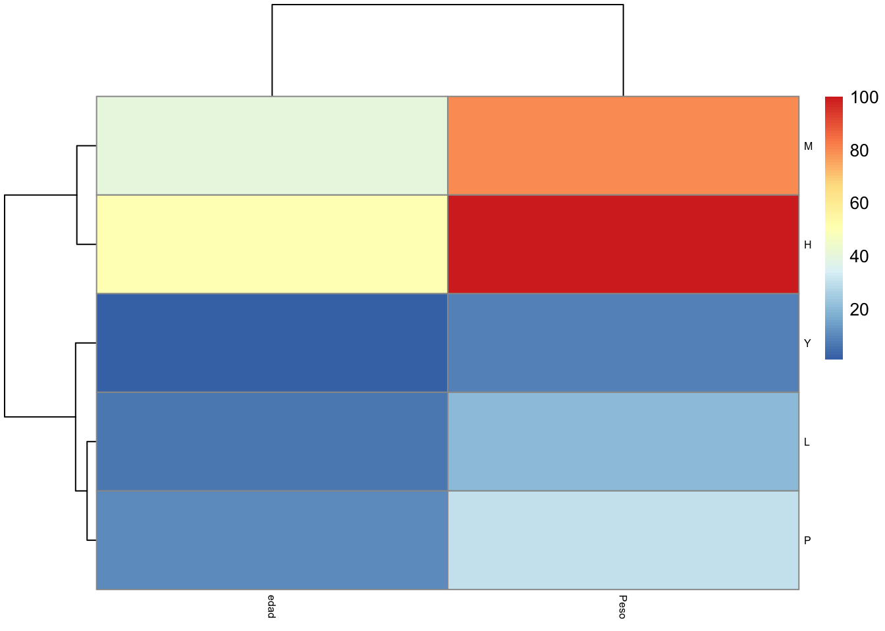
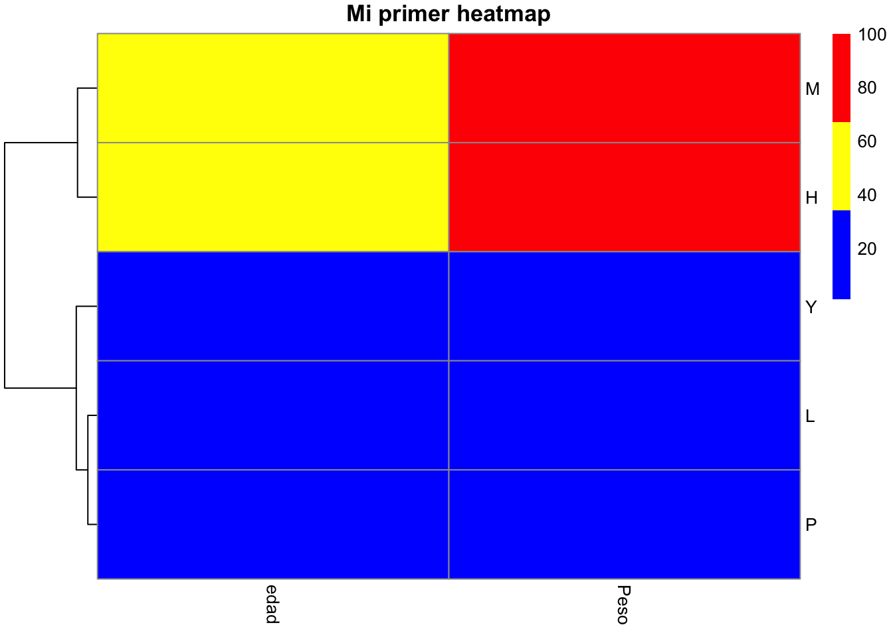

Capítulo 10 Heatmaps
Los heatmaps son una técnica de visualización de datos que mide la magnitud de un fenómeno en colores en dos dimensiones. La variación del color puede ser por tono o intensidad, haciendo obvia la lectura del fenómeno sobre el espacio que se trata.
Son el resultado obtenido al representar una matriz de valores en la que, en lugar de números, se muestra un gradiente de color proporcional al valor de cada variable en cada posición.
Los heatmaps son ampliamente utilizados para visualizar e interpretar datos de expresión génica, principalmente para experimentos con microarrays y RNA-seq. También se puede combinar con métodos de agrupación, que agrupan genes y/o muestras en función de la similitud de su patrón de expresión génica. Esto puede ser útil para identificar genes que están comúnmente regulados o firmas biológicas asociadas con una condición particular (por ejemplo, una enfermedad o una condición ambiental).
Para crear los heatmps usaremos pheatmap(). Instalamos la paquetería y después la cargamos.
install.packages("pheatmap")library(pheatmap)El set de datos que vamos a usar los puedes descargar de aquí. Recuerda guardarlos en tu carpeta de trabajo actual, como lo vimos en la sección 7.
data <- read.csv(file = "Datos.csv")Vamos a restructurar los datos
rownames(data) <- data[,1]
samp2 <- data[,-1]Transformaremos nuestros datos a una matriz para poder crear nuestro heatmap.
mat_data <- data.matrix(samp2[,1:ncol(samp2)])
mat_data## edad Peso
## L 6 20
## M 40 80
## P 10 30
## H 50 100
## Y 1 8Construyendo un heatmap básico
pheatmap(mat_data)
Con los comandos fontsize_col(columnas) y fontsize_row (filas), puedes cambiar el tamaño de letra y hacerlo más grande o más pequeño.
pheatmap(mat_data,
fontsize_col=6,
fontsize_row=6)
main te permite agregar el título al Heatmap. Recuerda que el título que eligas debe estar entre comillas
pheatmap(mat_data,
fontsize_col=10,
fontsize_row=10,
main = "Mi primer heatmap")
La escala de colores fríos generalmente se usa en los heatmaps. color te permite cambiar los colores de la gráfica.
Aquí y aquí puedes revisar los colores disponibles en R que puedes usar en tus gráficas.
pheatmap(mat_data,
fontsize_col=10,
fontsize_row=10,
main = "Mi primer Heatmap",
color = c("blue", "yellow","red"))
Agregar o cambiar las líneas de los clusters con cluster_cols y cluster_rows
pheatmap(mat_data,
fontsize_col=10,
fontsize_row=10,
main = "Mi primer heatmap",
color = c("blue", "yellow","red"),
cluster_cols=F,
cluster_rows=T)
pheatmap(mat_data,
fontsize_col=10,
fontsize_row=10,
main = "Mi primer heatmap",
color = c("blue", "yellow","red"),
cluster_cols=F,
cluster_rows=F)